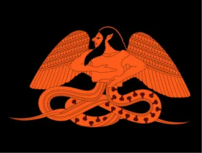
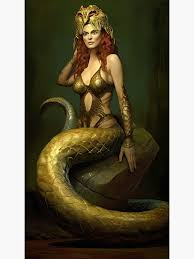

L'HYDRE DE LERNE un monstre adorable
Qu'est ce que c'est ?
Nb : On ne prend pas la ressponssabilité si vous mourez
L'YDRE DE LERNE a été creer par TYPHON et ECHIDNA


Ils ont tout les deux le buste humain et le bas de leur corps represente un ou des serpents.Ils ont laire très aimants n'est ce pas?
L'Hydre de Lerne est un mostre mythologique a 7 tetes. Il est le 2 ème des 12 travaux que Hercule doit accomplir.

Lors du combat la plus grade erreur à faire est de lui couper une de ses nombreuse tetes car quand on le fait 2 autres repossent.
Donc ... en vrai ... pouquois pas essayer ?
On peut le tuer en lui coupant la tete du millieu;la plus importante
Donc toi aussi va combattre L'Hydre De Lerne une créature à laquelle tu as envie de faire plein de calins comme ton chat.